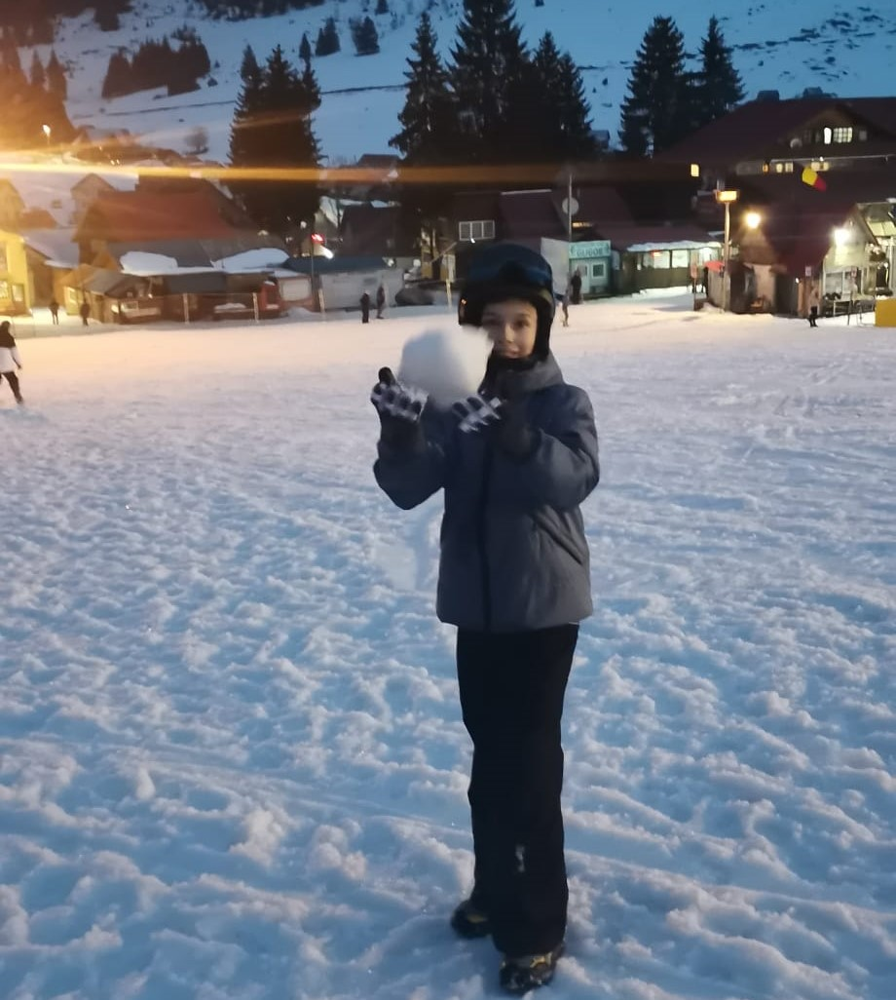

Pentru o experiență bună la schi, trebuie să ai echipamentul prezentat mai sus. Fiecare parte din echipament are propriul său rol:
-casca= protejează capul atunci când cazi;
-ochelarii de schi= îți apară ochii de zăpada lucioasă;
-geaca, pantalonii de schi și mănușile= te încălzesc;
-clăparii= pentru a fixa schiurile;
-schiurile= îți permit să te deplasezi pe zăpadă.
-casca= protejează capul atunci când cazi;
-ochelarii de schi= îți apară ochii de zăpada lucioasă;
-geaca, pantalonii de schi și mănușile= te încălzesc;
-clăparii= pentru a fixa schiurile;
-schiurile= îți permit să te deplasezi pe zăpadă.
Pentru a urca pe pârtie, te folosești de o crosă. Aceasta te va urca la înălțimea dorită.
Când ajungi la acea înălțime, scoate crosa dintre picioare și pregătește-te pentru a schia. Atenție! Dacă urci foarte sus, asigură-te că știi tehnicile de schi corect și că nu este ceață!
Pentru a schia, trebuie să faci cât mai multe cristiane și să fii atent la persoane și la obstacole.
Pentru a frâna, va trebui să faci „felia de pizza”. Cu cât mai mare, cu atât mai puternică este forța de frânare.
Dacă unele zone sunt abrupte, încetinește obligatoriu! Te poți răni sau să cazi într-o prăpastie!
Sper că v-au fost utile informațiile prezentate!